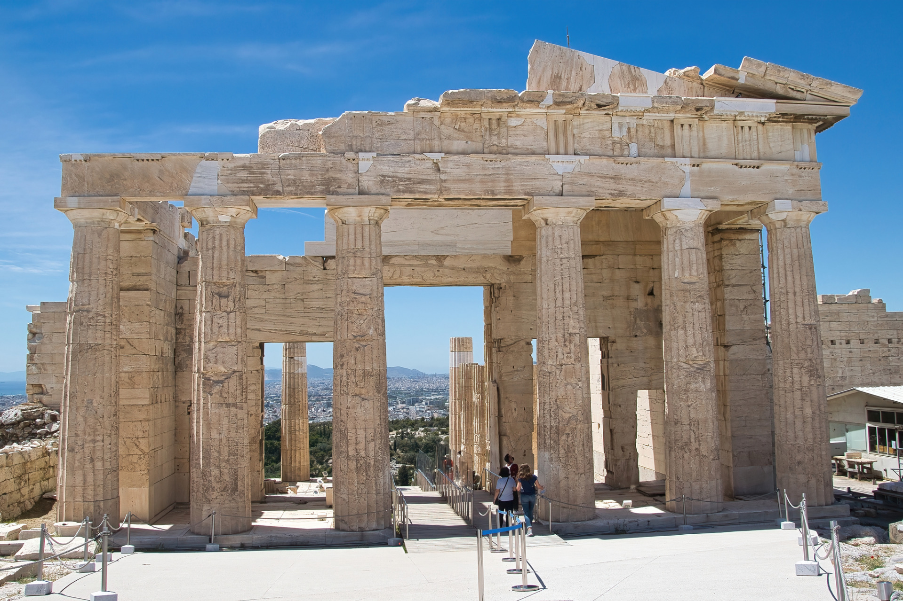
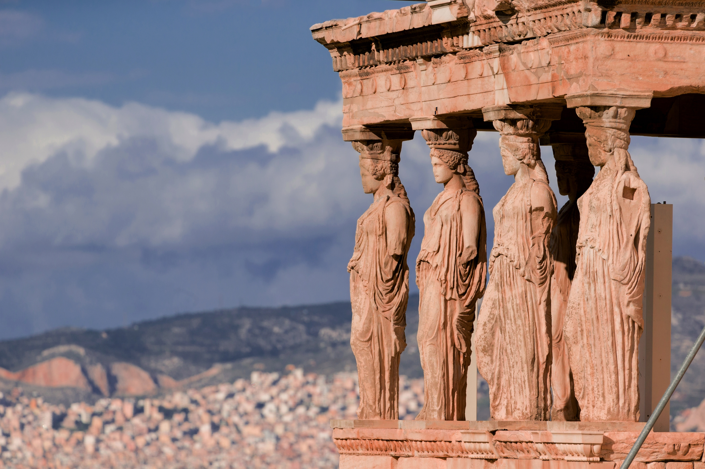
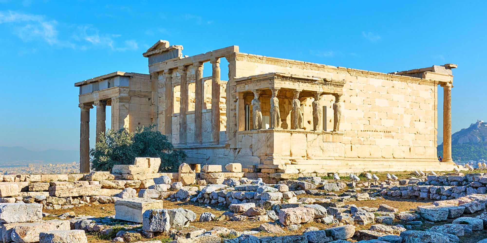
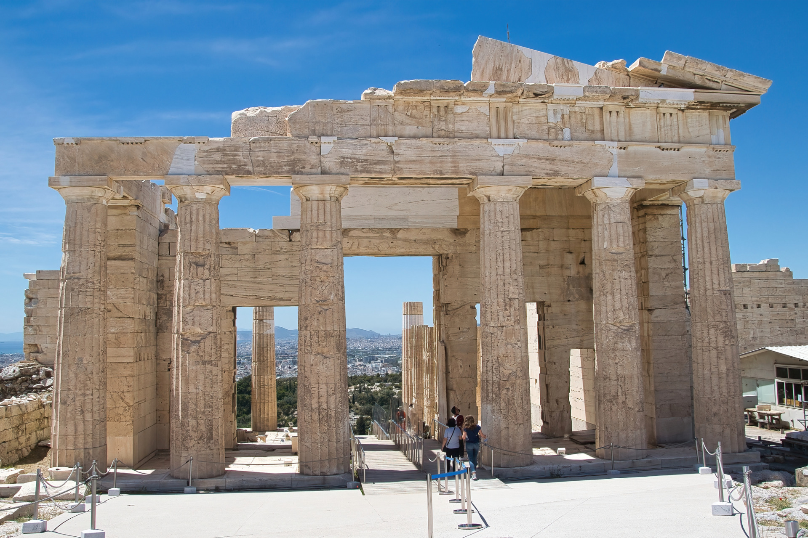
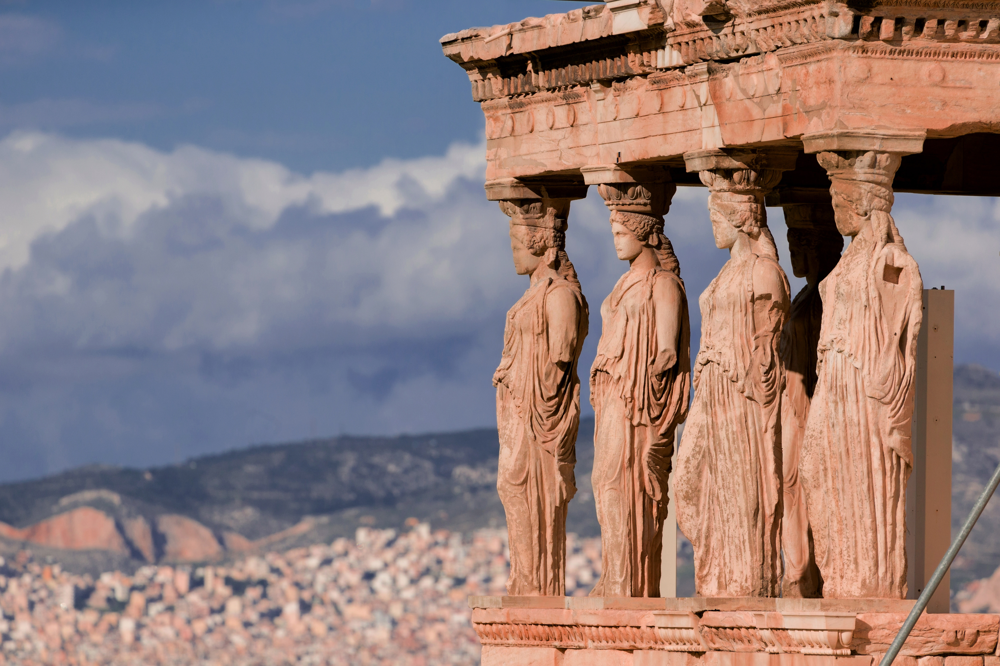
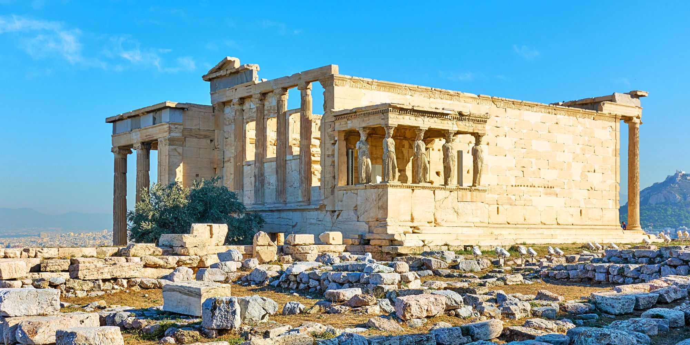

Ismerje meg az Akropolisz lenyűgöző világát!
Fedezze fel Athén lenyűgöző történelmét és kultúráját az Akropolisz élménysétáinkkal! Sétáljon vissza az időben az ókori görög civilizáció csodálatos emlékeinél, miközben vezetőink elkalauzolják Önt az Akropolisz lenyűgöző látványosságainak közelében. Élvezze a festői kilátást a városra, és ismerje meg az ősi építészet, művészet és mitológia kincseit. Csatlakozzon hozzánk, és hagyja, hogy az Akropolisz varázsa elbűvölje!
Programjaink átlagosan 20-25 fős csoportokban zajlanak, hogy minden résztvevőnek lehetősége legyen a személyre szabott élményekre. A séták általában 2-3 órán át tartanak, amelyek során a résztvevők bejárják az Akropolisz főbb látnivalóit, beleértve a Parthenont, a Propylonsot, az Erechtheiont és más fontos helyszíneket.
 






A túravezetőink
A túra vezetője tapasztalt helyi idegenvezető, aki szakértője az ókori görög történelemnek és kultúrának. Kiváló nyelvi készségekkel és átfogó ismeretekkel rendelkezik az Akropolisz történetéről, a művészeti és építészeti elemekről, valamint az ókori görög mitológiáról. Biztos lehet benne, hogy vezetőnk érdekes és informatív történetekkel és érdekességekkel fogja gazdagítani az ön Akropolisz élményét.